Gallery
Our work in the community
Explore moments from mental health and social wellbeing programs, community empowerment, environmental action and youth-led initiatives.
Environment & Climate Change
Community environmental action
Youth and community members taking part in clean-up and environmental responsibility activities.
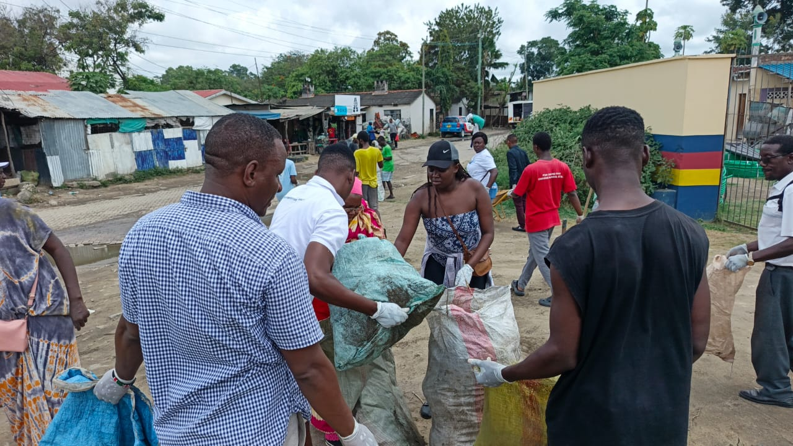
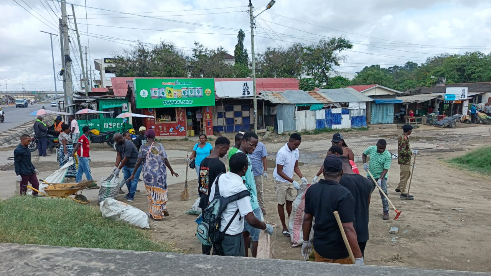
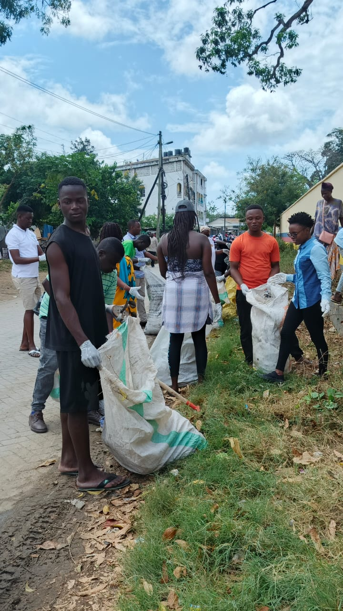
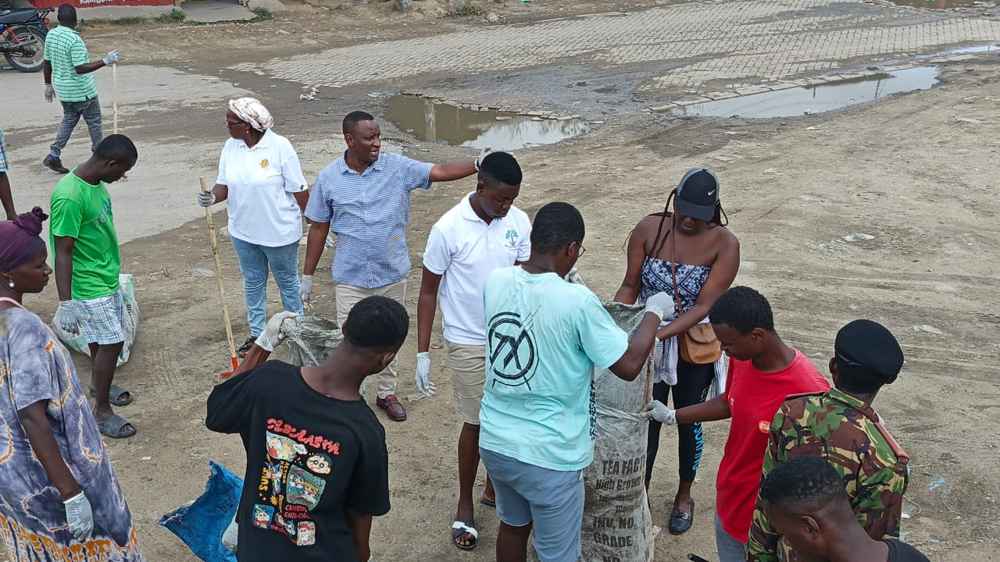

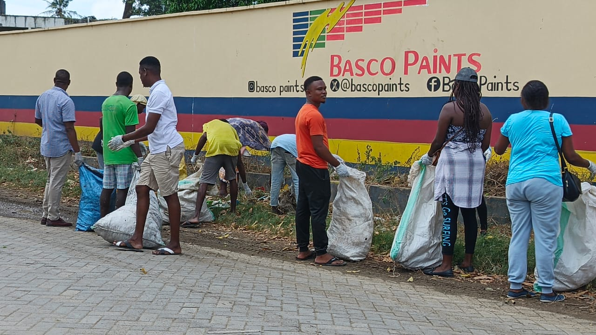
Group Problem Management Plus
Building practical coping and problem-management skills
Group PM+ sessions create structured spaces where participants learn practical strategies for managing emotional and everyday challenges.

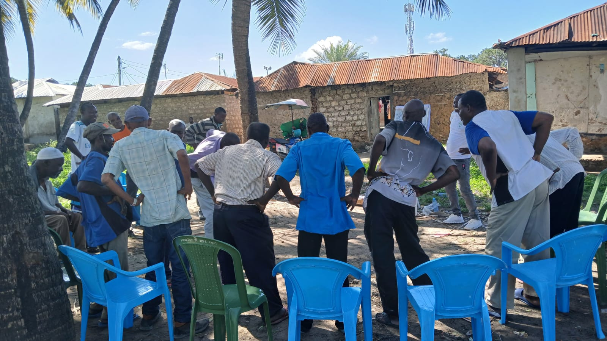
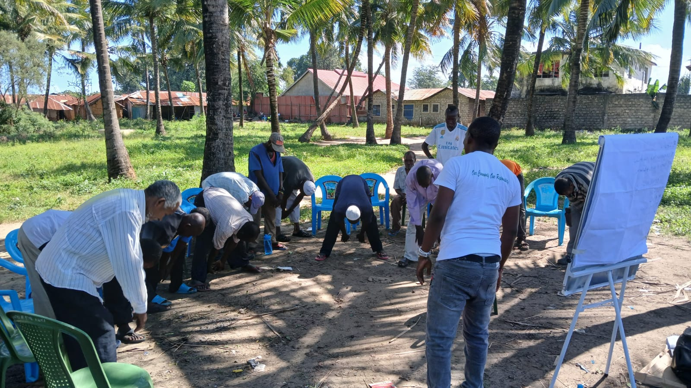
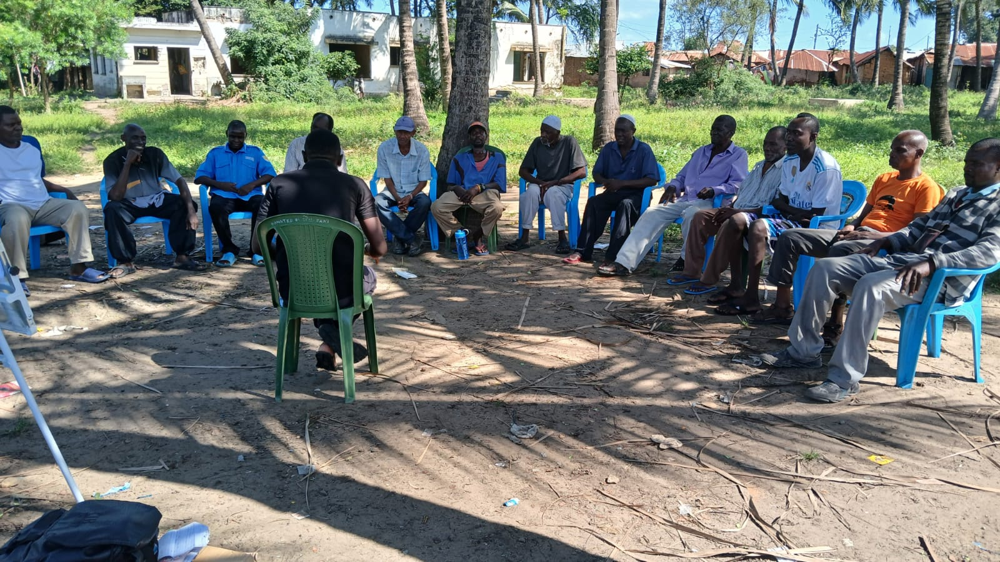
IPT-G
Interpersonal Psychotherapy Group sessions
Group-based sessions supporting participants through shared dialogue, interpersonal connection and structured psychosocial support.
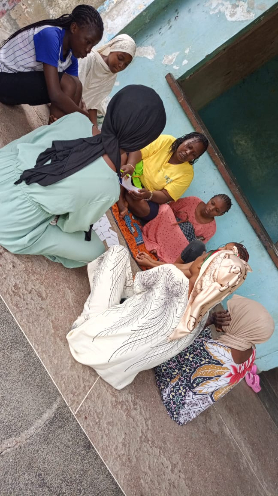

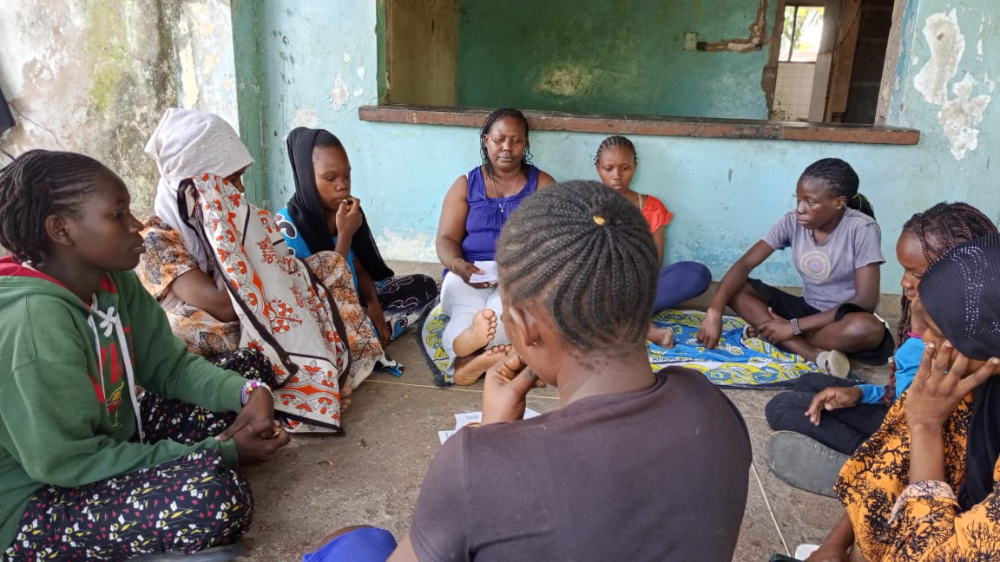
Ustawi Minds Project
Strengthening mental health literacy and wellbeing
Community sessions that encourage mental health awareness, healthy help-seeking behaviour and stronger social support.

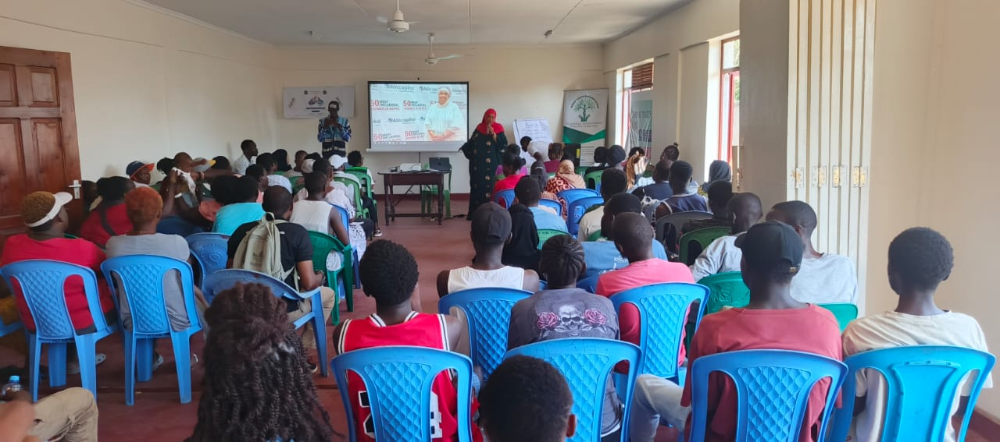
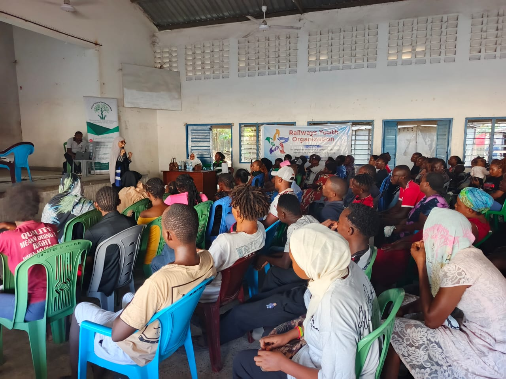
More From Mizizi
Community programs and youth engagement